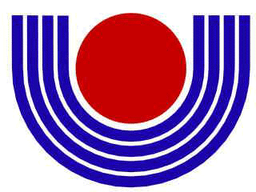

|

Grupo de Usuários e Programadores de Software Livre |
|
|
Apoio: Parque Tecnológico Itaipu ITAI - Instituto de Tecnologia Aplicada e Inovação |
Parceiros: PSL Trinacional Prognus Software Livre |
|
|
Visão Geral
O grupo GNOIA é formado por usuários e desenvolvedores de software livre com o objetivo comum de incentivar e disseminar, através de alternativas de software, a adoção de softwares livres no ambiente acadêmico. JustificativaÉ comum universidades adotarem um modelo de ensino baseado em softwares proprietários para cursos acadêmicos. O grupo acredita que a inserção do software livre nesse meio é mais que um avanço tecnológico, é um meio de racionar custos, direcionando verbas (muitas vezes escassas) para outras necessidades de uma universidade. O uso de software livre, principalmente em cursos de Ciência da Computação ou similares, desvincula o aluno de plataformas de desenvolvimento caras (onde muitas vezes se pratica a pirataria) e proporciona a ele maior conhecimento sobre a operação de um computador. CuriosidadeO nome GNOIA surgiu em uma das confraternizações realizadas pelos alunos de Ciência da Computação da UNIOESTE, através da junção das palavras: gnu e paranóia. |
|
|
Integrantes ermRETIREISSO@gnoia.org peceninRETIREISSO@gnoia.org beboRETIREISSO@gnoia.org jediRETIREISSO@gnoia.org dmenorRETIREISSO@gnoia.org medelinRETIREISSO@gnoia.org patitoRETIREISSO@gnoia.org mrquejoRETIREISSO@gnoia.org evertonRETIREISSO@gnoia.org emecaRETIREISSO@gnoia.org squiterRETIREISSO@gnoia.org natiRETIREISSO@gnoia.org magugoRETIREISSO@gnoia.org myagiRETIREISSO@gnoia.org pacocaRETIREISSO@gnoia.org dirceuRETIREISSO@gnoia.org spacialRETIREISSO@gnoia.org fishRETIREISSO@gnoia.org segfaultRETIREISSO@gnoia.org kaironRETIREISSO@gnoia.org |
Projetos Trabalhos Acadêmicos Aqui disponibilizamos nossos trabalhos de Ciência da Computação para que sejam estudados, modificados, utilizados para qualquer finalidade, e, preferencialmente, remetidos novamente ao site com as melhorias efetuadas. |
Fale Conosco: irc.freenode.net #gnoia

 Ciência da Computação - UNIOESTE-Foz - 3o. Lugar do Brasil (ENADE 2005)